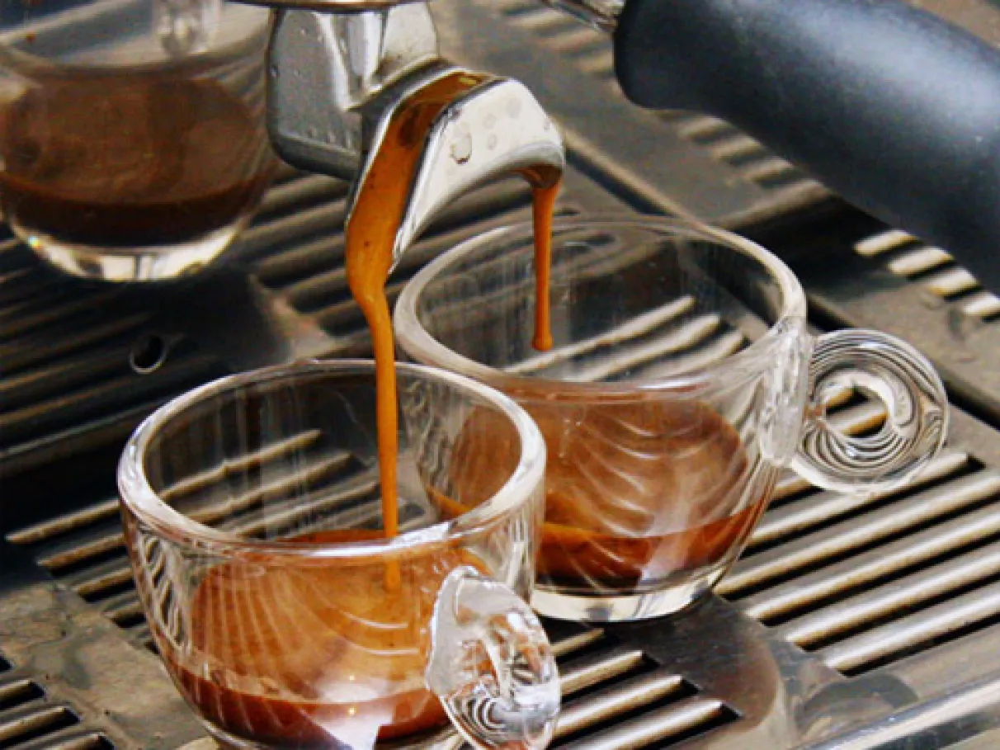

Receitas de Cafeteria
Café Expresso Tradicional

Criado por: Barista Ana
Atualizada em: 10/10/2025
Clássico café expresso, intenso e encorpado, perfeito para começar o dia ou dar energia em qualquer momento.
Ingredientes
- 7 a 9 g de café moído fino
- 30 ml de água filtrada
Modo de preparo
- Aqueça a máquina de expresso.
- Coloque o café moído no porta-filtro e compacte.
- Extraia cerca de 30 ml em 25 a 30 segundos.
- Sirva imediatamente.